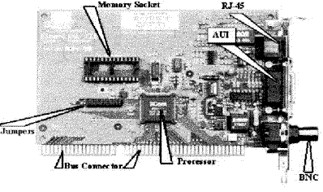
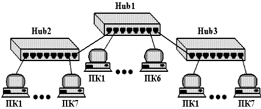
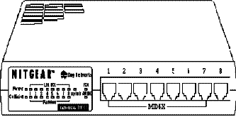
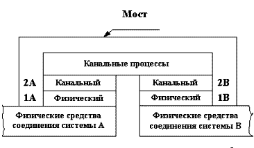
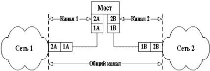
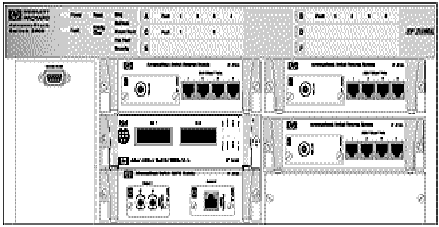
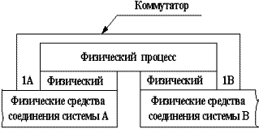
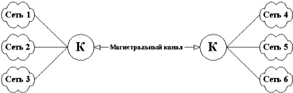
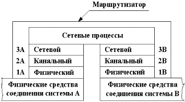
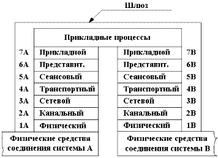

Сетевые адаптеры – это сетевое оборудование, обеспечивающее функционирование сети на физическом и канальном уровнях.
Сетевой адаптер относится к периферийному устройству компьютера, непосредственно взаимодействующему со средой передачи данных, которая прямо или через другое коммуникационное оборудование связывает его с другими компьютерами. Это устройство решает задачи надежного обмена двоичными данными, представленными соответствующими электромагнитными сигналами, по внешним линиям связи. Как и любой контроллер компьютера, сетевой адаптер работает под управлением драйвера операционной системы, и распределение функций между сетевым адаптером и драйвером может изменяться от реализации к реализации.
Компьютер, будь то сервер или рабочая станция, подключается к сети с помощью внутренней платы – сетевого адаптера (хотя бывают и внешние сетевые адаптеры, подключаемые к компьютеру через параллельный порт). Сетевой адаптер вставляется в гнездо материнской платы. Карты сетевых адаптеров устанавливаются на каждой рабочей станции и на файловом сервере. Рабочая станция отправляет запрос к файловому серверу и получает ответ через сетевой адаптер, когда файловый сервер готов. Сетевые адаптеры преобразуют параллельные коды, используемые внутри компьютера и представленные маломощными сигналами, в последовательный поток мощных сигналов для передачи данных по внешней сети. Сетевые адаптеры должны быть совместимы с кабельной системой сети, внутренней информационной шиной ПК и сетевой операционной системой.
|
Таблица 9.1 |
|||||||||||||||||||||||||||||||||||||||||||||||||||
|
Для работы ПК в сети надо правильно установить и настроить сетевой адаптер. Для адаптеров, отвечающих стандарту PnP, настройка производится автоматически. В ином случае необходимо настроить линию запроса на прерывание IRQ (Interrupt Request Line) и адрес ввода/вывода (Input/Output address). Адрес ввода/вывода – это трехзначное шестнадцатеричное число, которое идентифицирует коммуникационный канал между аппаратными устройствами и центральным процессором. Чтобы сетевой адаптер функционировал правильно, должны быть настроены линия IRQ и адрес ввода/вывода. Запросы на прерывание IRQ и адреса ввода/вывода для основных устройств приведены в таблице 9.1.
Обычно сетевая карта работает с конфликтами, если двум устройствам назначен один и тот же ресурс (запроса на прерывание или адрес ввода/вывода). Сетевые карты поддерживают различные типы сетевых соединений. Физический интерфейс между самой сетевой картой и сетью называют трансивером (transceiver) – это устройство, которое как получает, так и посылает данные. Трансиверы на сетевых картах могут получать и посылать цифровые и аналоговые сигналы. Тип интерфейса, который использует сетевая карта, часто может быть физически определен на сетевой карте. Перемычки, или джамперы (маленькие перемычки, соединяющие два контакта), могут быть настроены для указания типа трансивера, который должна использовать сетевая карта в соответствии со схемой сети. Например, перемычка в одном положении может включить разъем RJ-45 для поддержки сети типа витая пара, в другом – поддержку внешнего трансивера.
Сетевые адаптеры производят семь основных операций при приеме или передачи сообщения:
Гальваническая развязка с коаксиальным кабелем или витой парой. Для этой цели используются импульсные трансформаторы. Иногда дя развязки используются оптроны.
Прием (передача) данных. Данные передаются из ОЗУ ПК в адаптер или из адаптера в память ПК через программируемый канал ввода/вывода, канал прямого доступа или разделяемую память.
Буферизация. Для согласования скоростей пересылки данных в адаптер или из него со скоростью обмена по сети используются буфера. Во время обработки в сетевом адаптере, данные хранятся в буфере. Буфер позволяет адаптеру осуществлять доступ ко всему пакету информации. Использование буферов необходимо для согласования между собой скоростей обработки информации различными компонентами ЛВС.
Формирование пакета. Сетевой адаптер должен разделить данные на блоки в режиме передачи (или соединить их в режиме приема) данных и оформить в виде кадра определенного формата. Кадр включает несколько служебных полей, среди которых имеется адрес компьютера назначения и контрольная сумма кадра, по которой сетевой адаптер станции назначения делает вывод о корректности доставленной по сети информации.
Доступ к каналу связи. Набор правил, обеспечивающих доступ к среде передачи. Выявление конфликтных ситуаций и контроль состояния сети.
Идентификация своего адреса в принимаемом пакете. Физический адрес адаптера может определяться установкой переключателей, храниться в специальном регистре или прошиваться в ППЗУ.
Преобразование параллельного кода в последовательный код при передаче данных, и из последовательного кода в параллельный при приеме. В режиме передачи данные передаются по каналу связи в последовательном коде.
Кодирование и декодирование данных. На этом этапе должны быть сформированы электрические сигналы, используемые для представления данных. Большинство сетевых адаптеров для этой цели используют манчестерское кодирование. Этот метод не требует передачи синхронизирующих сигналов для распознавания единиц и нулей по уровням сигналов, а вместо этого для представления 1 и 0 используется перемена полярности сигнала.
Передача или прием импульсов. В режиме передачи закодированные электрические импульсы данных передаются в кабель (при приеме импульсы направляются на декодирование).
|  |
|
Рис. 9.1 Вид адаптера |
Сетевые адаптеры вместе с сетевым программным обеспечением способны распознавать и обрабатывать ошибки, которые могут возникнуть из-за электрических помех, коллизий или плохой работы оборудования.
Последние типы сетевых адаптеров поддерживают технологию Plug and Play (вставляй и работай). Если сетевую карту установить в компьютер, то при первой загрузке система определит тип адаптера и запросит для него драйверы. Внешний вид адаптера показан на рис. 9.1.
Некоторые сетевые адаптеры имеют возможность использовать оперативную память ПК в качестве буфера для хранения входящих и исходящих пакетов данных. Базовый адрес (Base Memory Address) представляет собой шестнадцатеричное число, которое указывает на адрес в оперативной памяти, где находится этот буфер. Важно выбрать базовый адрес без конфликтов с другими устройствами.
Сетевые адаптеры различаются по типу и разрядности используемой в компьютере внутренней шины данных – ISA, EISA, PCI, MCA.
Сетевые адаптеры различаются также по типу принятой в сети сетевой технологии – Ethernet, Token Ring, FDDI и т.п. Как правило, конкретная модель сетевого адаптера работает по определенной сетевой технологии (например, Ethernet). В связи с тем, что для каждой технологии сейчас имеется возможность использования различных сред передачи данных (тот же Ethernet поддерживает коаксиальный кабель, неэкранированную витую пару и оптоволоконный кабель), сетевой адаптер может поддерживать как одну, так и одновременно несколько сред. В случае, когда сетевой адаптер поддерживает только одну среду передачи данных, а необходимо использовать другую, применяются трансиверы и конверторы.
Различные типы сетевых адаптеров отличаются не только методами доступа к среде и протоколами, но еще и следующими параметрами:
Наиболее известны следующие типы адаптеров:
Адаптеры Ethernet представляют собой плату, которая вставляется в свободный слот материнской (системной) платы компьютера. Из-за широкого распространения компьютеров с системной магистралью ISA существует широкий спектр адаптеров, предназначенных для установки в слот ISA, а также производятся адаптеры, совместимые с шиной. Чаще всего адаптеры Ethernet имеют для связи с сетью два внешних разъема: для коаксиального кабеля (разъем BNC) и для кабеля на витой паре. Для выбора типа кабеля применяются перемычки или переключатели, которые устанавливаются перед подключением адаптера к сети.
Адаптеры Fast Ethernet производятся изготовителями с учетом определенного типа среды передачи. Сетевой кабель при этом подключается непосредственно к адаптеру (без трансивера).
Оптические адаптеры стандарта 10BASE-FL могут устанавливаться в компьютеры с шинами ISA, PCI, МСА. Эти адаптеры позволяют отказаться от внешних преобразователей среды и от микротрансиверов. При установке этих адаптеров возможна реализация полнодуплексного режима обмена информацией. Для повышения универсальности в оптических адаптерах сохраняется возможность соединения по витой паре с разъемом RJ-45.
Для спецификации 100BASE-FX соединение концентратора и адаптера по оптоволокну осуществляется с использованием оптических соединителей типа SC или ST. Выбор типа оптического соединителя (SC или ST) зависит от того, новая или старая это инсталляция. Для этой спецификации выпускаются сетевые адаптеры, совместимые с шиной PCI. Адаптеры способны поддерживать как полудуплексный, так и полнодуплексный режим работы. Для облегчения настройки и эксплуатации на переднюю панель адаптера вынесено несколько индикаторов состояния. Кроме того, существуют модели адаптеров, способные работать как по одномодовому, так и по многомодовому оптоволоконному кабелю.
Сетевые адаптеры для технологии Gigabit Ethernet предназначены для установки в сервера и мощные рабочие станции. Для повышения эффективности работы они способны поддерживать полнодуплексный режим обмена информацией.
Адаптеры FDRI могут использоваться на разнообразных рабочих станциях и в устройствах межсетевого взаимодействия – мостах и маршрутизаторах. Существуют адаптеры FDDI, предназначенные для работы со всеми распространенными шинами: ISA, EISA, VESA Local Bus (VLB) и т. д. В сети FDDI такие устройства, как рабочие станции или мосты и подсоединяются к кольцу через адаптеры одного из двух типов: с двойным (DAS) или одиночным (SAS) подключением. Адаптеры DAS осуществляют физическое соединение устройств как с первичным, так и со вторичным кольцом, что повышает отказоустойчивость сети. Такой адаптер имеет два разъема (розетки) оптического интерфейса. Адаптеры SAS подключают рабочие станции к концентратору FDDI через одиночную оптоволоконную линию в звездообразной топологии. Эти адаптеры представляют собой плату, на которой наряду с электронными компонентами установлен оптический трансивер с разъемом (розеткой) оптического интерфейса.
Основная функция повторителя (repeater), как это следует из его названия, – повторение сигналов, поступающих на его порт. Повторитель улучшает электрические характеристики сигналов и их синхронность, и за счет этого появляется возможность увеличивать общую длину кабеля между самыми удаленными в сети узлами.
Многопортовый повторитель часто называют концентратором (concentrator) или хабом (hub), что отражает тот факт, что данное устройство реализует не только функцию повторения сигналов, но и концентрирует в одном центральном устройстве функции объединения компьютеров в сеть. Практически во всех современных сетевых стандартах концентратор является необходимым элементом сети, соединяющим отдельные компьютеры в сеть.
|  |
|
Рис. 9.2 Логический сегмент, построенный с использованием концентраторов |
Концентратор или Hub представляет собой сетевое устройство, действующее на физическом уровне сетевой модели OSI.
Отрезки кабеля, соединяющие два компьютера или какие либо два других сетевых устройства, называются физическими сегментам, поэтому концентраторы и повторители, которые используются для добавления новых физических сегментов, являются средством физической структуризации сети.
Концентратор – устройство, у которого суммарная пропускная способность входных каналов выше пропускной способности выходного канала. Так как потоки входных данных в концентраторе больше выходного потока, то главной его задачей является концентрация данных. При этом возможны ситуации, когда число блоков данных, поступающее на входы концентратора, превышает его возможности. Тогда концентратор ликвидирует часть этих блоков.
Ядром концентратора является процессор. Для объединения входной информации чаще всего используется множественный доступ с разделением времени. Функции, выполняемые концентратором, близки к задачам, возложенным на мультиплексор. Наращиваемые (модульные) концентраторы позволяют выбирать их компоненты, не думая о совместимости с уже используемыми. Современные концентраторы имеют порты для подключения к разнообразным локальным сетям.
Концентратор является активным оборудованием. Концентратор служит центром (шиной) звездообразной конфигурации сети и обеспечивает подключение сетевых устройств. В концентраторе для каждого узла (ПК, принтеры, серверы доступа, телефоны и пр.) должен быть предусмотрен отдельный порт.
Наращиваемые концентраторы представляют собой отдельные модули, которые объединяются при помощи быстродействующей системы связи. Такие концентраторы предоставляют удобный способ поэтапного расширения возможностей и мощности ЛВС.
Концентратор осуществляет электрическую развязку отрезков кабеля до каждого узла, поэтому короткое замыкание на одном из отрезков не выведет из строя всю ЛВС.
|  |
|
Рис. 9.3 Внешний вид концентратора |
Концентраторы образуют из отдельных физических отрезков кабеля общую среду передачи данных – логический сегмент. Логический сегмент также называют доменом коллизий, поскольку при попытке одновременной передачи данных любых двух компьютеров этого сегмента, хотя бы и принадлежащих разным физическим сегментам, возникает блокировка передающей среды. Следует особо подчеркнуть, что, какую бы сложную структуру ни образовывали концентраторы, например путем иерархического соединения (рис. 9.2), все компьютеры, подключенные к ним, образуют единый логический сегмент, в котором любая пара взаимодействующих компьютеров полностью блокирует возможность обмена данными для других компьютеров.
На рис. 9.3 показан внешний вид концентратора Концентраторы поддерживают технологию plug and play и не требуют какой-либо установки параметров. Необходимо просто спланировать свою сеть и вставить разъемы в порты хаба и компьютеров.
При выборе места для установки концентратора примите во внимание следующие аспекты:
Выбор места установки концентратора является наиболее важным этапом планирования небольшой сети. Хаб разумно расположить вблизи геометрического центра сети (на одинаковом расстоянии от всех компьютеров). Такое расположение позволит минимизировать расход кабеля. Длина кабеля от концентратора до любого из подключаемых к сети компьютеров или периферийных устройств не должна превышать 100 м.
Концентратор можно поставить на стол или закрепить его на стене с помощью входящих в комплект хаба скоб. Установка хаба на стене позволяет упростить подключение кабелей, если они уже проложены в офисе.
При планировании сети есть возможность наращивания (каскадирования) хабов.
Концентраторы имеют много преимуществ. Во-первых, в сети используется топология звезда, при которой соединения с компьютерами образуют лучи, а хаб является центром звезды. Такая топология упрощает установку и управление сети. Любые перемещения компьютеров или добавление в сеть новых узлов при такой топологии весьма несложно выполнить. Кроме того, эта топология значительно надежнее, поскольку при любом повреждении кабельной системы сеть сохраняет работоспособность (перестает работать лишь поврежденный луч). Светодиодные индикаторы хаба позволяют контролировать состояние сети и легко обнаруживать неполадки.
Различные производители концентраторов реализуют в своих устройствах различные наборы вспомогательных функций, но наиболее часто встречаются следующие:
Мост (bridge) – ретрансляционная система, соединяющая каналы передачи данных.
|  |
|
Рис. 9.4 Структура моста |
В соответствии с базовой эталонной моделью взаимодействия открытых систем мост описывается протоколами физического и канального уровней, над которыми располагаются канальные процессы. Мост опирается на пару связываемых им физических средств соединения, которые в этой модели представляют физические каналы. Мост преобразует физический (1A, 1B) и канальный (2A, 2B) уровни различных типов (рис. 9.4). Что касается канального процесса, то он объединяет разнотипные каналы передачи данных в один общий.
Мост (bridge), а также его быстродействующий аналог – коммутатор (switching hub), делят общую среду передачи данных на логические сегменты. Логический сегмент образуется путем объединения нескольких физических сегментов (отрезков кабеля) с помощью одного или нескольких концентраторов. Каждый логический сегмент подключается к отдельному порту моста/коммутатора. При поступлении кадра на какой-либо из портов мост/коммутатор повторяет этот кадр, но не на всех портах, как это делает концентратор, а только на том порту, к которому подключен сегмент, содержащий компьютер-адресат.
Мосты могут соединять сегменты, использующие разные типы носителей, например 10BaseT (витая пара) и 10Base2 (тонкий коаксиальный кабель). Они могут соединять сети с разными методами доступа к каналу, например сети Ethernet (метод доступа CSMA/CD) и Token Ring (метод доступа TPMA).
Разница между мостом и коммутатором состоит в том, что мост в каждый момент времени может осуществлять передачу кадров только между одной парой портов, а коммутатор одновременно поддерживает потоки данных между всеми своими портами. Другими словами, мост передает кадры последовательно, а коммутатор параллельно.
Мосты используются только для связи локальных сетей с глобальными, то есть как средства удаленного доступа, поскольку в этом случае необходимость в параллельной передаче между несколькими парами портов просто не возникает.
|  |
|
Рис. 9.5 Соединение двух сетей при помощи двух каналов |
Когда появились первые устройства, позволяющие разъединять сеть на несколько доменов коллизий (по сути фрагменты ЛВС, построенные на hub-ах), они были двух портовыми и получили название мостов (bridge-ей). По мере развития данного типа оборудования, они стали многопортовыми и получили название коммутаторов (switch-ей). Некоторое время оба понятия существовали одновременно, а позднее вместо термина «мост» стали применять «коммутатор». Далее в этой теме будет использоваться термин «коммутатор» для обозначения этих обеих разновидностей устройств, поскольку все сказанное ниже в равной степени относится и к мостам, и к коммутаторам. Следует отметить, что в последнее время локальные мосты полностью вытеснены коммутаторами.
Н ередки случаи, когда необходимо соединить локальные сети, в которых различаются лишь протоколы физического и канального уровней. Протоколы остальных уровней в этих сетях приняты одинаковыми. Такие сети могут быть соединены мостом. Часто мосты наделяются дополнительными функциями. Такие мосты обладают определенным интеллектом (интеллектом в сетях называют действия, выполняемые устройствами) и фильтруют сквозь себя блоки данных, адресованные абонентским системам, расположенным в той же сети. Для этого в памяти каждого моста имеются адреса систем, включенных в каждую из сетей. Блоки, проходящие через интеллектуальный мост, дважды проверяются, на входе и выходе. Это позволяет предотвращать появление ошибок внутри моста.
Мосты не имеют механизмов управления потоками блоков данных. Поэтому может оказаться, что входной поток блоков окажется большим, чем выходной. В этом случае мост не справится с обработкой входного потока, и его буферы могут переполняться. Чтобы этого не произошло, избыточные блоки выбрасываются. Специфические функции выполняет мост в радиосети. Здесь он обеспечивает взаимодействие двух радиоканалов, работающих на разных частотах. Его именуют ретранслятором.
Мосты (bridges) оперируют данными на высоком уровне и имеют совершенно определенное назначение. Во-первых, они предназначены для соединения сетевых сегментов, имеющих различные физические среды, например для соединения сегмента с оптоволоконным кабелем и сегмента с коаксиальным кабелем. Мосты также могут быть использованы для связи сегментов, имеющих различные протоколы низкого уровня (физического и канального).
Коммутатор (switch) – устройство, осуществляющее выбор одного из возможных вариантов направления передачи данных.
|  |
|
Рис. 9.6 Внешний вид коммутатора Switch 2000 |
В коммуникационной сети коммутатор является ретрансляционной системой (система, предназначенная для передачи данных или преобразования протоколов), обладающей свойством прозрачности (т.е. коммутация осуществляется здесь без какой-либо обработки данных). Коммутатор не имеет буферов и не может накапливать данные. Поэтому при использовании коммутатора скорости передачи сигналов в соединяемых каналах передачи данных должны быть одинаковыми. Канальные процессы, реализуемые коммутатором, выполняются специальными интегральными схемами. В отличие от других видов ретрансляционных систем, здесь, как правило, не используется программное обеспечение.
Вначале коммутаторы использовались лишь в территориальных сетях. Затем они появились и в локальных сетях, например, частные учрежденческие коммутаторы. Позже появились коммутируемые локальные сети. Их ядром стали коммутаторы локальных сетей.
|  |
|
Рис. 9.7 Структура коммутатора |
Коммутатор (Switch) может соединять серверы в кластер и служить основой для объединения нескольких рабочих групп. Он направляет пакеты данных между узлами ЛВС. Каждый коммутируемый сегмент получает доступ к каналу передачи данных без конкуренции и видит только тот трафик, который направляется в его сегмент. Коммутатор должен предоставлять каждому порту возможность соединения с максимальной скоростью без конкуренции со стороны других портов (в отличие от совместно используемого концентратора). Обычно в коммутаторах имеются один или два высокоскоростных порта, а также хорошие инструментальные средства управления. Коммутатором можно заменить маршрутизатор, дополнить им наращиваемый маршрутизатор или использовать коммутатор в качестве основы для соединения нескольких концентраторов. Коммутатор может служить отличным устройством для направления трафика между концентраторами ЛВС рабочей группы и загруженными файл-серверами.
Коммутатор локальной сети (local-area network switch) – устройство, обеспечивающее взаимодействие сегментов одной либо группы локальных сетей.
|  |
|
Рис. 9.8 Схема подключения локальных сетей к коммутаторам |
Коммутатор локальной сети, как и обычный коммутатор, обеспечивает взаимодействие подключенных к нему локальных сетей (рис.9.8). Но в дополнение к этому он осуществляет преобразование интерфейсов, если соединяются различные типы сегментов локальной сети. Чаще всего это сети Ethernet, кольцевые сети IBM, сети с оптоволоконным распределенным интерфейсом данных.
В перечень функций, выполняемых коммутатором локальной сети, входят:
Маршрутизатор (router) – ретрансляционная система, соединяющая две коммуникационные сети либо их части.
|  |
|
Рис. 9.9 Структура маршрутизатора |
Каждый маршрутизатор реализует протоколы физического (1А, 1B), канального (2А, 2B) и сетевого (3A, 3B) уровней, как показано на рис.9.9. Специальные сетевые процессы соединяют части коммутатора в единое целое. Физический, канальный и сетевой протоколы в разных сетях различны. Поэтому соединение пар коммуникационных сетей осуществляется через маршрутизаторы, которые осуществляют необходимое преобразование указанных протоколов. Сетевые процессы выполняют взаимодействие соединяемых сетей.
Маршрутизатор работает с несколькими каналами, направляя в какой-нибудь из них очередной блок данных.
Маршрутизаторы обмениваются информацией об изменениях структуры сетей, трафике и их состоянии. Благодаря этому, выбирается оптимальный маршрут следования блока данных в разных сетях от абонентской системы-отправителя к системе-получателю. Маршрутизаторы обеспечивают также соединение административно независимых коммуникационных сетей.
Архитектура маршрутизатора также используется при создании узла коммутации пакетов.
Маршрутизаторы превосходят мосты своей способностью фильтровать и направлять пакеты данных на сети. Так как маршрутизаторы работают на сетевом уровне, они могут соединять сети, использующие разную сетевую архитектуру, методы доступа к каналам связи и протоколы.
Маршрутизаторы не обладают такой способностью к анализу сообщений как мосты, но зато могут принимать решение о выборе оптимального пути для данных между двумя сетевыми сегментами.
Мосты принимают решение по поводу адресации каждого из поступивших пакетов данных, переправлять его через мост или нет в зависимости от адреса назначения. Маршрутизаторы же выбирают из таблицы маршрутов наилучший для данного пакета.
В поле зрения маршрутизаторов находятся только пакеты, адресованные к ним предыдущими маршрутизаторами, в то время как мосты должны обрабатывать все пакеты сообщений в сегменте сети, к которому они подключены.
Тип топологии или протокола уровня доступа к сети не имеет значения для маршрутизаторов, так как они работают на уровень выше, чем мосты (сетевой уровень модели OSI). Маршрутизаторы часто используются для связи между сегментами с одинаковыми протоколами высокого уровня. Наиболее распространенным транспортным протоколом, который используют маршрутизаторы, является IPX фирмы Novell или TCP фирмы Microsoft.
Необходимо запомнить, что для работы маршрутизаторов требуется один и тот же протокол во всех сегментах, с которыми он связан. При связывании сетей с различными протоколами лучше использовать мосты. Для управления загруженностью трафика сегмента сети также можно использовать мосты.
Шлюз (gateway) – ретрансляционная система, обеспечивающая взаимодействие информационных сетей.
|  |
|
Рис. 9.10 Структура шлюза |
Шлюз является наиболее сложной ретрансляционной системой, обеспечивающей взаимодействие сетей с различными наборами протоколов всех семи уровней. В свою очередь, наборы протоколов могут опираться на различные типы физических средств соединения.
В тех случаях, когда соединяются информационные сети, то в них часть уровней может иметь одни и те же протоколы. Тогда сети соединяются не при помощи шлюза, а на основе более простых ретрансляционных систем, именуемых маршрутизаторами и мостами.
Шлюзы оперируют на верхних уровнях модели OSI (сеансовом, представительском и прикладном) и представляют наиболее развитый метод подсоединения сетевых сегментов и компьютерных сетей. Необходимость в сетевых шлюзах возникает при объединении двух систем, имеющих различную архитектуру. Например, шлюз приходится использовать для соединения сети с протоколом TCP/IP и большой ЭВМ со стандартом SNA. Эти две архитектуры не имеют ничего общего, и потому требуется полностью переводить весь поток данных, проходящих между двумя системами.
В качестве шлюза обычно используется выделенный компьютер, на котором запущено программное обеспечение шлюза и производятся преобразования, позволяющие взаимодействовать нескольким системам в сети. Другой функцией шлюзов является преобразование протоколов. При получении сообщения IPX/SPX для клиента TCP/IP шлюз преобразует сообщения в протокол TCP/IP.
Шлюзы сложны в установке и настройке. Шлюзы работают медленнее, чем маршрутизаторы.
Назначение сетевого адаптера.
Какие параметры необходимо устанавливать у сетевого адаптера?
Перечислить функции сетевых адаптеров.
Что такое физический адрес адаптера?
Как определить физический адрес адаптера?
Какие есть типы сетевых адаптеров?
На каком уровне сетевой модели OSI используется сетевой адаптер?
Каково назначение повторителя?
В каких случаях ставят сетевой повторитель?
Что такое сетевой концентратор и каково его назначение?
На каком уровне сетевой модели OSI используется Hub?
Назначение моста.
На каком уровне сетевой модели OSI используется мост?
Какие сегменты сети может соединять мост?
Назначение коммутатора.
На каком уровне сетевой модели OSI используется коммутатор?
Каково различие между мостом и коммутатором?
Назначение маршрутизатора.
На каком уровне сетевой модели OSI используется маршрутизатор?
Каково различие между маршрутизаторами и мостами?
Что такое шлюз и каково его назначение.
На каком уровне сетевой модели OSI используется шлюз?